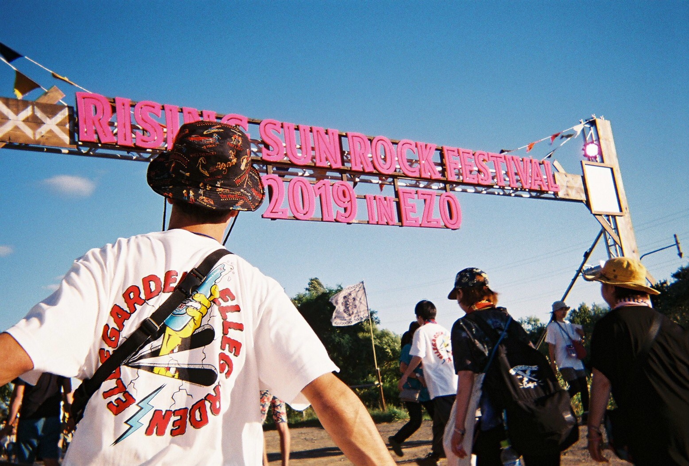

NEWS
最新情報
LIBRARY
ライブラリー

- 
ARTISTS
アーティスト
-
打首獄門同好会
合いの手の多さならトップクラス。初めてのライブでも絶対盛り上がれる。盛り上がれないわけない。
「日本の米は世界一」「布団の中から出たくない」「私を二郎に連れてって」「ニクタベイコウ！」曲名から伝わる高揚感。 しかもギターのお姉さん還暦迎えてるって凄すぎん？未だにアタマぶんぶん振り回してんぞ。 名前で敬遠されるバンドNo.1。
「日本の米は…」
「世界イチィィィィィィ！！」〜おすすめソング〜
・日本の米は世界一
・きのこたけのこ戦争
・はたらきたくない打首獄門同好会
-
ELLEGARDEN
語るだけで一ヶ月はご飯なしでも生きていける。そんな超すごい伝説のバンド。ノリノリな曲調なのに 女の子にフラれて自分はなんてクソだったんだっていう感じのメンヘラ歌詞。
それが良いのだ。そして細美武士の中性的な声。女の子は絶対惚れるね。 ライブの時もめっちゃ良いこと言うんです。男でも惚れるね。
そして運命的なのが、復活した日が5/10、そう僕の誕生日です。人生で一番の誕生日プレゼントでした。 エモさ、かっこよさ、可愛さ、力強さ、全てを兼ね備えたバンドです。もっとライブやってくれ！
はぁ！カッコええ！！〜おすすめソング〜
・supernova
・Alternative Plans
・Cakes And Ale And Everlasting Laugh
・ジターバグELLEGARDEN
-
キュウソネコカミ
関西発ネタ系バンド。しかしネタのようでこちらを見透かしたように痛いところをついてくる歌詞。 キーボードが特徴的で彼らのネタ系ソングに拍車をかけている。
ポップな曲調とボーカルのヤマサキセイヤのどストレートに伝えてくる歌詞は全ての者の欲望を剥き出しにさせる。
ライブが超楽しい。歌ってくれるだけじゃなくてこちらも巻き込んで暴れる。超迷惑。(ウソ)
作者はフェスで対面したが、自分たちより大きいステージで歌ってるUVERWORLDに「お客さんとるんじゃねぇ！」ってブチギレてたなぁ。〜おすすめソング〜
・ハッピーポンコツ
・ギリ昭和
・ファントムヴァイブレーションキュウソネコカミ
-
グッドモーニングアメリカ
彼らの曲を一言で言うなら、「社会の風刺と反発心」。日々生きていて何となく不安になったり、 SNSで寂しさを埋めるようになったり。そんなことありませんか。自分はあります。
それをテーマにして、さらにノリが良いため若い世代の心に響く内容の曲が多いことが魅力の一つ。聴いていて、 「あ、これ自分のことだ」そんな感覚になります。
残念なのが2020年2月に活動を休止してしまったこと。休止ってことはいつか戻ってくるってことだから いつか戻ってくる日まで聴き続けたい。〜おすすめソング〜
・コピペ
・だけど不安です
・キャッチアンドリリースグッドモーニングアメリカ
-
クリープハイプ
ボーカル尾崎世界観はハイトーンボイス、高い感受性、鋭い批評眼、繊細な表現力を持ち合わせる、 メンヘラホイホイ（ごめんなさい）。
世界観って名前は、昔ファンに「世界観がいいね」と言われたから何だとか。 日常生活の情景が思い浮かぶ歌詞が多いので頭にスッと入ってきやすい。
しかしカラオケで歌ってやろうと意気込むと喉が終わる。女性でも歌えない。サビが歌いたいのに…。
女性目線の歌も結構あって女性人気がクソ高い。北海道で見た時まじで女性ファンばっかだった。 女性の気持ち、わかるようになりたいですね。〜おすすめソング〜
・栞
・ただ
・二十九、三十クリープハイプ
-
サイダーガール
「あー、青春してえ」って思ったら聴いて欲しいアーティスト。高校生の頃の甘酸っぱい記憶をすぐに 思い出させてくれる。真っ直ぐすぎる歌詞は大人には刺激が強すぎるかも。
メディアに顔を出したことがなく、ミュージックビデオも首以下しか見ることができない。
毎年「サイダーガール」として若手女優を起用してPVやMVに出演している。そのためPVを見るとより一層青春を感じることができる。
サイダーのような爽快感を味わいたいアナタにおすすめのアーティスト。〜おすすめソング〜
・パレット
・クローバー
・エバーグリーンサイダーガール
-
THE ORAL CIGARETTES
ファンをめっちゃ大切にするバンドマン。普通の人なら恥ずかしくて言えないようなキザなセリフをサラッと言う。他の人の悪口を言っている時を見たことがない。
しかも努力家で、初期に比べ歌唱力や表現力が上がったと言う声が多い。
曲は、人間の溢れ出す闇や負の感情をそのまま書いたような歌詞をキャッチーなメロディが印象的。
ボーカル山中拓也はとにかくエロい。PVを見てもらうとわかるが大人のオトコってこういうことかって思い知る。
イケメンで高学歴で性格良くて努力家な完璧人間。せめてクチャラーくらいであってほしいものである。〜おすすめソング〜
・エイミー
・Everything
・容姿端麗な嘘THE ORAL CIGARETTES
-
sumika
はいきました、爽やかイケメンボーカルバンド。しかし、顔とはイメージが異なる太い声に驚くだろう。バンド名から女性シンガーと思われがち。
前向きになれる歌詞、ポップな曲調からちょっとでもいいから明日も頑張ろうと思えるアーティスト。
自分は「Lovers」からsumikaを知ったのだが、その時の歌詞が強烈でそれで引き込まれた。「ねえ浮気して、ねえ余所見して」何だこれ、ラブソング じゃあねえのか。いえ、究極のラブソングです。
大勢の人と比べた中から最後には自分を選んでほしい。という意味らしい。このフレーズをきっかけにボーカル片岡健太ワールドにどっぷりハマっていくのであった。〜おすすめソング〜
・「伝言歌」
・Lovers
・坂道、白を告げてsumika
-
Nothing's Carved In Stone
自分は音楽に関して知識は豊富ではないが、素人目線でも演奏技術が高いことがわかる。自分の知っているバンドの中で、一番演奏技術が高い。ギター、ベース、ドラム全員がうますぎて他のバンドに比べ 楽器隊の主張がすごい。その音楽隊を束ねるボーカルの村松拓は渋めの声で聴く人を魅了させる。
さらに、イントロからサビに持っていく流れが最高でサビで鳥肌が出る。英語の曲が多めだが日本語オンリーの曲はポップな感じが強いので聴きやすい。
ライブではよく踊るよう煽ってくるのでライブもクソ楽しい。〜おすすめソング〜
・November 15th
・Isolation
・Like a Shooting StarNothing's Carved In Stone
-
Nulbarich
ソウル、ファンク、アシッド・ジャズなどのブラックミュージックをベースに、ポップス、ロックなどにもインスパイアされたサウンドが持ち味のバンド。 簡単にいうとオシャレな音楽を聴いてる自分に酔いたい時にオススメなアーティスト。
ボーカル以外メンバーは固定されておらず演奏形態に応じてメンバーを変えている。 曲は日本語と英語をミックスさせた歌詞で、直接的な表現が多い日本語の中に曖昧さを含む英語を混ぜることで、曲全体として聴き手に解釈を委ねているからだそう。
昼のドライブとか散歩の時聴いたら最高。〜おすすめソング〜
・It's Who We Are
・Almost There
・OrdinaryNulbarich
-
BUMP OF CHICKEN
もはや説明不要の王道ロックバンド、知らない人いるのかと感じるレベル。端正なルックス、キャッチーでもバラードでもマッチした優しい声、共感を生む歌詞。人気がないわけがない。
さらにメンバー全員幼稚園からの幼馴染みで、日本を代表するバンドになるって凄すぎませんか。
ボーカルの藤原基央さんは作詞へのこだわりが半端じゃないらしく、納得いくまで時間をかけて曲を作るそう。
意外とゴリゴリの恋愛ソングは多くはなく、どっちかというとありのままの自分を応援してくれる曲など自分の内面を比喩で表現してくれる。
一回でもいいから生で聴いてみたいバンド…フェスでないかなぁ。〜おすすめソング〜
・真っ赤な空を見ただろうか
・ガラスのブルース
・ラフ・メイカーBUMP OF CHICKEN
-
04 Limited Sazabys
名前は、フォーリミテッドサザビーズと読みます。由来はガンダムのモビルスーツ？らしい。通称フォーリミ。
ボーカルGEN君の女子顔負けの超ハイトーンボイスと疾走感のあるメロディーが特徴的なバンド。特にサビ時の音楽隊のハイテンポなサウンドが爽快感を感じさせる。
顔が広く、自身が主催するフェス、YON FESを地元で開催するなど地元愛も強い。意外とライブではモッシュやサークルなど激しめらしい。〜おすすめソング〜
・Squall
・midnight cruising
・Horizon04 Limited Sazabys
-
FOMARE
作者が最初に聴いたのは「Lani」。聴いた瞬間に好きになった。
歌詞は甘ったるく、ダメンズ目線で女々しさを感じさせる恋愛ソングが多い。サビのポップさ、哀愁を感じさせるメロディと声質がいい。
ライブに行ったことはないが、みんなで歌うような曲が多いらしい、めっちゃいいね。My Hair is Badやback numberに少なからず影響を受けていることを感じる。
個人的に誰かに聴かせたいって感じより、自分に言い聞かせるって感じが好きなのかも。エモロック最高…！
ゆうや的今年ブレイクしそうなバンド第二位！マイヘアの二番煎じとか言われてるから、マイヘア超えるくらい売れて欲しい。〜おすすめソング〜
・Lani
・5cm
・赤と青FOMARE
-
BLUE ENCOUNT
通称ブルエン。なんと言っても歌詞がすごいシンプルでストレート。作者はストレートに表現するより比喩表現だったり、聴き手に連想させる曲が好きなのだが、ブルエンはそこがいい。
メリハリの効いた疾走感溢れるメロディと、心に直接訴えかけてくるような力強い声質。元気出したいときに聴くのがおすすめ。
ライブでもクサい言葉を恥ずかしげも無くぶつけてくる。ライブパフォーマンスも圧巻で、会場の一体感はスゴイ。
アニメの歌としても起用されているので、ロックファンだけでなく、アニメファンからも支持されるバンド。
何より細美武士信者の一人。（ココ重要！！）〜おすすめソング〜
・VS
・だいじょうぶ
・SUMMER DIVEBLUE ENCOUNT
-
HEY-SMITH
楽器隊に、サックス、トロンボーン、トランペットを含んだ六人組パンクバンド。前述した通り、他にはあまりない三楽器がいい味を出している。
全員で歌い、全員で演奏している感じがすごくいい。スピード感溢れるメロディ、メインとコーラスがよくスイッチするツインボーカル、厚みのある楽器隊は豪快でハイテンションなライブを作り出す。
つまり、めっちゃ激しいけどめっちゃ楽しいライブってこと。フェスって言葉が似合うバンド一位かもしんない。あとそれぞれの楽器のソロのところもたまんない。
年間150本以上のライブをこなすらしい。体力すごすぎ…、夏のうちにライブ行きたいけど果たして行けるのか。〜おすすめソング〜
・2nd Youth
・Let It Punk
・Don't Worry My FriendHEY-SMITH
-
MY FIRST STORY
通称マイファス。バンド名はPay money To my PainのKさんが付けたらしい、スゲェ…。
ボーカルHiroはワンオクのボーカルTakaの弟というのは有名な話。そのため声は似ている。いつか兄を超えると言ってひたむきに努力している姿はほんと応援したくなる。
夢は東京ドームでライブをすることでファンにもいつか連れて行くと約束してくれている。アップテンポな曲が有名なんだけど、個人的にHiroの歌うバラードがムッチャ好き。低音と高音を使い分けて歌うアーティストって痺れるよね。
さらにライブのMCも上手で、ファンの心をわしづかみにしてくる。作者もそれでグッと好きになった。〜おすすめソング〜
・君のいない夜を越えて
・「花」-0714-
・不可逆リプレイスMY FIRST STORY
-
マカロニえんぴつ
バンド名で食わず嫌いだったバンドランキング1位。そのせいで当時行ったフェスでご対面できなかった、マジ悔しい。
今のバンドって、「〇〇に似てる！」とか言われがちだけど、マカえんは唯一無二の曲ばっか。それもそのはずメンバー全員音大卒。
MVはレトロ感漂い、歌詞と声から感じさせるエモ。難しい単語を使っているわけじゃないのにこんな表現できないよって思う。ミスチルの桜井さんみたいな。
ノリで好き！ってよりはメッセージが好き！ってなる。元気が出る曲ってシンプルに、「いいことあるさ」って感じが多い印象だけど、マカえんは落ち込んだときのマイナスな感情も肯定してくれる。〜おすすめソング〜
・ヤングアダルト
・哀しみロック
・ブルーベリー・ナイツマカロニえんぴつ
-
マキシマム ザ ホルモン
外国人：「なんて言ってんの」 日本人：「なんて言ってんの」
そんな感じ。終始なんて言ってるのかわかんないけどぶっ飛んでる歌詞。完全に食わず嫌いだった、もっと早く聴いていれば+2%は人生楽しくなってた。
マジでイカれた人たちで、フルフェイスマスク絶対着用ライブとか、1足のストッキングを2人ペアで顔面に被ってライブを観る事が条件。脱げたり破けたら退場ライブとか。
でもライブほんとオモロイし、意外とファンのマナーが良いことで知られている。モッシュ、サークルで靴紐解けても守ってくれる。〜おすすめソング〜
・便所サンダルダンス
・恋のスペルマ
・中2 ザ ビームマキシマム ザ ホルモン
-
mol-74
読み方は「モルカルマイナスナナジュウヨン」って読みます。分子のmoleculeと、好きな数字74を足したらしい。読み方初見殺し。
ピアノとボーカルの女性らしい優しい歌声がエモさを感じさせる。ゆっくりした曲が中心なので聴くと過去の生活やその情景が思い浮かぶ。
高い音域だけど嫌にならない声質なのでバラード好きな人とか絶対好きになれる。個人的今年ブレイクしそうなバンド一位。
作者はどっちかというとハイテンポでノリのいい曲が好きだが、このバンドは聴き入ってしまう。「エイプリル」のPVとか、映像付きで聴いて欲しい。〜おすすめソング〜
・エイプリル
・％
・グレイッシュmol-74
-
ヤバイTシャツ屋さん
大阪出身の終始ふざけてる人たち。芸人に音楽の才能足した感じ。とりあえず歌詞が面白すぎる。
「どすえ〜おこしやす京都〜」って曲があるんだけど、どすえボンバー、どすえアタックってなんやねん。「ウェイウェイ大学生」って曲ではいわゆる陽キャの大学生を歌ってるんだけど、「いるいるそんなヤツ」ってなる。
そんな世の中のあるある、いるいるを曲にしてくれた人たち。謎に曲調もキャッチーでノリがいいからつい聴いてしまう。
ギターのありぼぼは帰国子女という謎にハイスペックである。〜おすすめソング〜
・喜志駅周辺なんもない
・どすえ〜おこしやす京都〜
・かわEヤバイTシャツ屋さん
-
UNISON SQUARE GARDEN
多くのアニメのタイアップで知られるスリーピースバンド。通称ユニゾン。ボーカルの斎藤さんのハイトーンボイスとアップテンポでよく拍子が変わるのが特徴。
早い曲は、歌うのが早すぎてよく噛まないなと思う。しかもめちゃめちゃ上手くて変拍子多発するのでパンピーには歌えない。
歌詞はベースの田淵さんが書くことが多いのだが、よくわからん熟語とか使っていて歌詞を理解するのは難しいことが多い。ちゃんとわかるヤツもある。ちなみに作者はフィーリングで好きになった。
演奏技術が高いことで有名で、死ぬほど練習するそう。そんなん好きにならないわけないじゃん…〜おすすめソング〜
・春が来てぼくら
・Invisbile Sensation
・オリオンをなぞるUNISON SQUARE GARDEN
-
RADWIMPS
日本で知らない人はいない神バンド。絶妙な表現の歌詞とそれにあった野田洋次郎の柔らかくて繊細なウィスパーボイスが共感されている。地声と裏声の違いを感じさせることなく、「あれ、いつの間に裏声使ってたの！？」ってなる。スゴイ。
個人的に、他には無い比喩表現を使って感情を表現すると思いきや、ストレートな歌詞にのせて自分の気持ちを歌ってくるギャップにやられる。下ネタ好き。時々サイコパス。
いい曲いっぱいあるけど、下記に書いた三曲はほんとにほんとに良き曲なので是非聴いてほしい。最近、サブスク解禁されたからめっちゃ嬉しいです。
〜おすすめソング〜
・05410-(ん)
・もしも
・最大公約数RADWIMPS
-
WANIMA
2018年のメジャーデビューから更に勢いを増し、今年もトップスピードを緩めること無く、加速具合は最高潮！ 「最もフェスが盛り上がるバンドNo.１」「最もフェスに呼びたいバンドNo.１」そして「最もフェスが盛り上がりすぎて危険なバンドNo.１』といわれるWANIMAのチケットは勿論入手困難だ。
WANIMAがフェスのステージに出るならメンバーと共に炎天下で踊らないと確実に損をする。炎天下が一番似合うバンドと言っても過言ではない。家族や付き合いたての恋人同士で行くのは勇気がいるが大切な人と参戦して欲しい。 大人、女、男子ぶっ飛んであげていこう！！！！迷いなら捨てて後腐れ無しで！！！〜おすすめソング〜
・1CHANCE
・1106
・シグナルWANIMA
-
ONE OK ROCK
日本だけじゃなくて世界で売れてる怪物バンド。こんなすごいバンドがロッキンとかで歌っていたなんて…そして俺はなぜ行かなかったんだ…。
元気や勇気をもらえる歌が多い。今は英語の歌が多めだけど昔はそれなりに日本語の歌もあったからすんなり歌詞が入ってくると思う。
中高生の時落ち込んだ時とかめっちゃ聴いてた。「ゼイタクビョウ」「残響リファレンス」あたりの曲はドンピシャ。
カラオケで歌ってみようとチャレンジするけど、無理。神様、Taka様、仏様、そんな感じ。
しかもこのバンド、細美武士信者なのである！！まさにぐへへぐへへ状態である。〜おすすめソング〜
・キミシダイ列車
・カゲロウ
・CONVINCINGONE OK ROCK
TICKETS
チケット
受付券種
申込枚数制限
お1人様2枚まで
受付窓口
東京都新宿区西新宿八丁目17番1号 住友不動産新宿グランドタワー28F総合受付のみ
- 消費税込。
- チケットは1枚につき1名様のみ有効です。
- 6歳未満は入園・入場無料（保護者同伴に限る）。
- チケットをお忘れになられた場合いかなる理由でもご入場出来ませんのでご了承ください。
ACCESS
アクセス
会場
国営ひたち海浜公園
茨城県ひたちなか市馬渡字大沼605-4
車でご来場の方
常磐自動車道 友部JCT～北関東自動車道～ひたちなかI.C.／ひたち海浜公園I.C.／常陸那珂港I.C.をご利用ください。
お車でご来場の方は、必ず駐車券付き入場券をご購入ください。駐車券は、フェスティバル専用駐車場のみ使用可能です。なお、駐車券券面にて駐車エリアを指定させていただきます。
- ※ 駐車場の利用時間は、6:00～23:00です。
- ※ 駐車場の途中の出入り、夜間の留め置きはできません。
- ※ マイクロバス・キャンピングカー等でのご来場はできません。
- ※ 違法駐車、路上駐車は絶対におやめください。
- ※ 会場近辺への駐停車は一切できません。会場への車での送迎は絶対におやめください。
電車でご来場の方
JR常磐線 勝田駅
（上野駅より特急で約80分）
● 勝田駅・水戸駅と会場の間はシャトルバスが運行(有料)。
- ※ 東京方面行き・いわき方面行きともに電車の本数が限られているうえ、大変な混雑が予想されます。各自時刻表をご確認のうえ、ご来場ください。
- ※ 終演後、全ての方に退場していただくまでに時間がかかりますので、JRをご利用予定の方は、時間に余裕をもって行動してください。
- ※ Suicaなど交通系ICカードでご乗車されるお客様は残高不足にご注意ください。予め会場最寄駅までの乗車券をご購入のうえご乗車いただきますよう、ご協力をお願いいたします。
[参考] IC運賃：東京山手線内の駅→勝田駅 2,268円
NOTICE
注意事項